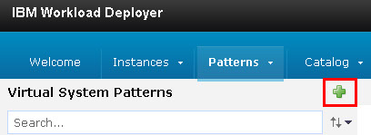
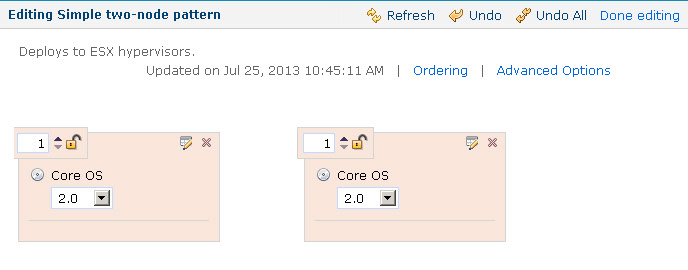

To provision dynamic environments from a cloud system,
you must create a virtual system pattern that specifies the contents
of the environment.
Before you begin
- Make sure that you have a user account on the cloud and that you have the permission to create
virtual system patterns.
For this type of cloud integration, the following cloud
systems are supported:
- IBM® Cloud Orchestrator version 2.4 or later
- IBM SmartCloud® Orchestrator
versions 2.2 and 2.3
- IBM PureApplication® System version 1.0 or later
- IBM Workload Deployer
version 3.1.0.6 or later
Within these cloud systems, you can provision the virtual resources in
environment profiles or in cloud groups. You can also assign the virtual resources
to IP groups, but only when you assign the resources to an environment profile
first. For more information, see
Creating environments. You can
also use virtual images with no more than one virtual network card.
IBM DevOps Deploy (Deploy) does
not support selecting different flavors of virtual resources or virtual nodes that
have a multiplicity greater than 1.
To connect to OpenStack and
OpenStack-based clouds, SoftLayer®,
Amazon Elastic Compute Cloud, VMware vCenter, or Microsoft™ Azure, see Connecting to clouds through the blueprint designer.
- Configure the cloud system as described in Configuring virtual system pattern-based clouds.
About this task
The virtual system pattern specifies one or more virtual images. The pattern also lists the
script packages to apply to the virtual images. These scripts perform tasks such as opening the
firewall and installing the IBM DevOps Deploy (Deploy) agent.
Procedure
- On the web console for the cloud host, create a new virtual
system pattern.
This process differs depending on the type
of cloud. For instructions, read the documentation for your cloud
system.
For example, for
IBM Workload Deployer,
click and then click the
New button.

- Give the pattern a name and click OK.
- Click Edit.
- In the Parts list, find one or more
base virtual images for the application.
Note: These virtual
images must have the following characteristics:
- An installation of Java™
- The unzip program
- The JAVA_HOME system variable set
If the image does not have one or more of these prerequisites,
you can add them later with script packages or select an appropriate
image.
Restriction: For versions of Deploy prior
to version 6.0.1.4, the image must not have more than one network
card. For version 6.0.1.4 and later, the image can have more than
one network card.
- Drag one or more copies of the base images to the editor.
For example, the following figure shows a pattern that
contains two images.

- Add script packages to the nodes based on the requirements
of your cloud system.
For example, you might need
to open the firewall on the images. You might also need to run script
packages for security compliance or registration. To add a script
package, find it in the Pattern Editor, under Scripts and
then drag the script package to one node at a time.
- Add the Install Deploy
Agent script
package to each node.
You do not need to specify the parameters
on this script package; these parameters are filled in when you provision
an environment using this pattern.
- Optional: Customize the pattern.
For
example, you can specify the passwords for the images by clicking
the Properties icon at
the top of each image. Depending on the images you are using, you
might be able to specify the memory or processing power of the images,
or other details about the images.
- Click Done editing to save the pattern.
What to do next
Now you can import this pattern to a resource template. See Importing resource templates from clouds